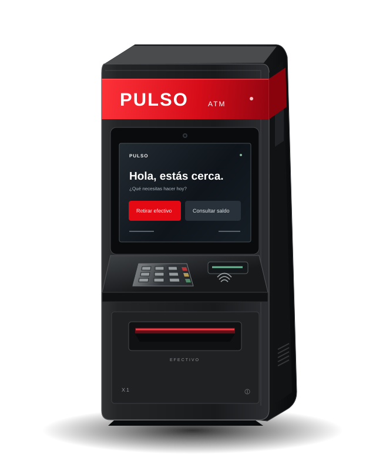

Demasiado lejos.
Conseguir efectivo no debería cambiar tus planes. La distancia entre las personas y los servicios sigue siendo una barrera.
Acceso donde transcurre la vida
Una nueva forma de acercarte a lo que necesitas.
El cajero que une diseño, tecnología y una experiencia más simple.

PULSO X1 Serie urbana / Diseño conceptual
Partimos de problemas reales para imaginar una mejor forma de acceder a los servicios financieros.
Conseguir efectivo no debería cambiar tus planes. La distancia entre las personas y los servicios sigue siendo una barrera.
Pantallas confusas, pasos innecesarios y dudas. Una operación cotidiana merece una experiencia que se entienda.
Cuando un equipo necesita atención, el servicio se detiene. Pensar en su mantenimiento también es pensar en las personas.
El X1 pone a las personas en el centro de cada decisión de diseño.
Conoce cada detalle en Nuestro productoUna pantalla de alto contraste, opciones visibles y un recorrido que guía cada operación.
Un cuerpo reforzado y una disposición de componentes pensada para el uso cotidiano.
Módulos diferenciados y acceso de servicio para simplificar la atención del equipo.
Así imaginamos la experiencia X1: directa, guiada y sin distracciones.
Retirar efectivo o consultar tu saldo. Las opciones principales aparecen desde el primer momento.
Identifícate y revisa la operación con las indicaciones de la pantalla, paso a paso.
Revisa el resultado, recoge tus pertenencias y continúa con lo que de verdad importa.
Descubre qué hay detrás de una experiencia más simple.